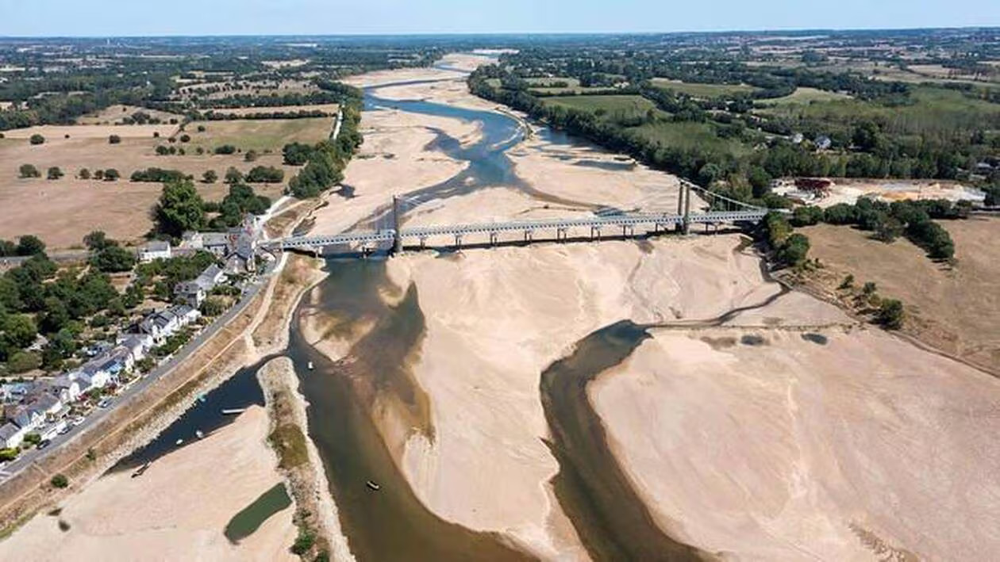

Extreme weather and climate events

Each year, extreme weather events -from heatwaves, droughts, to heavy precipitation and storms- impact people and ecosystems around the world. At a local level, these events represent rare and unusual climatic conditions to which communities are not well adapted. As the climate warms, the frequency and intensity of of such events are changing, making it essential to understand how extremes are evolving and what we can expect in the future.
The main challenge when studying weather extremes is that these events are rare per definition and only few of them are recorded in observations, making it hard to study processes, spatio-temporal changes and statistics related to those events. Climate models are a key tool to address this challenge. By simulating many possible versions of the climate, they generate large numbers of extreme events for analysis. However, models have limitations -especially at regional scales- which is why a combination of models, observations, and statistical methods remain essential.
In our research group we study weather extremes and their changes using diverse methods and approaches. We use and develop statistical and machine learning methods to better deduce changes of weather extremes from the observational record. We also analyze and produce climate simulations including special simulation protocols to efficiently simulate many extreme events (importance sampling) and counterfactual simulations showing how the same weather events would have looked like without anthropogenic climate change (nudged storyline simulations). We are analyzing heat waves, droughts, wildfires, cold spells and dark doldrums.
Publications:
Sippel, S., Barnes, C., Cadiou, C., Fischer, E., Kew, S., Kretschmer, M., Philip, S., Shepherd, T. G., Singh, J., Vautard, R., & Yiou, P. (2024). Could an extremely cold central European winter such as 1963 happen again despite climate change? Weather and Climate Dynamics, 5(3), 943–957. https://doi.org/10.5194/wcd-5-943-2024
Pfleiderer, P., Nath, S., & Schleussner, C.-F. (2022). Extreme Atlantic hurricane seasons made twice as likely by ocean warming. Weather and Climate Dynamics, 3(2), 471–482. https://doi.org/10.5194/wcd-3-471-2022